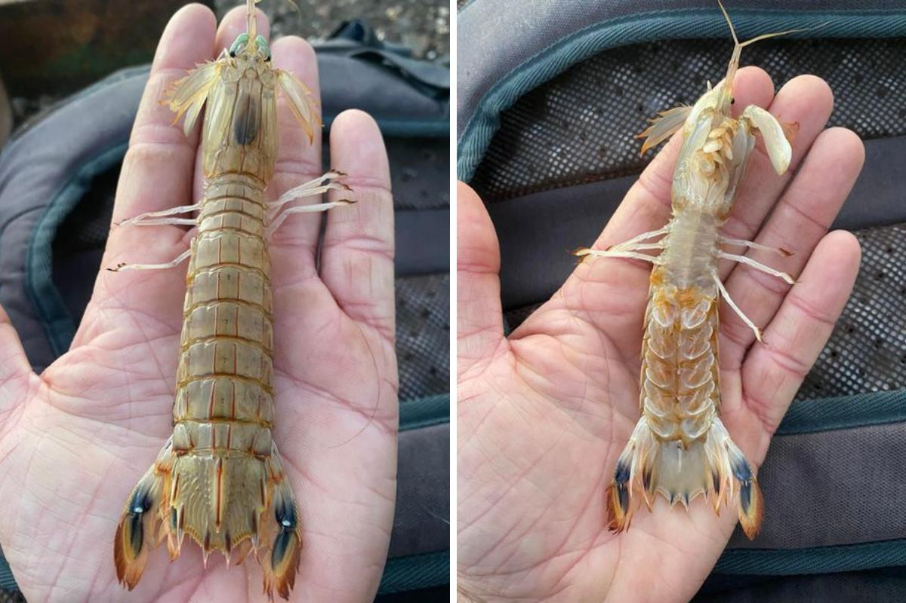
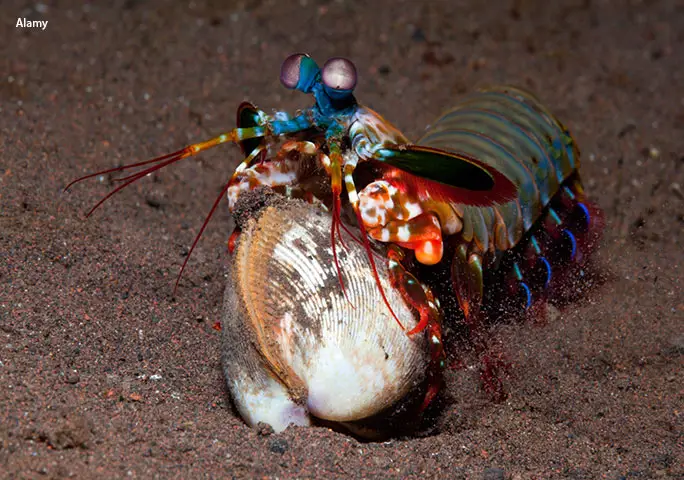
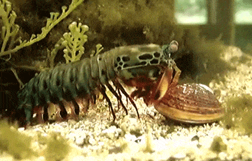
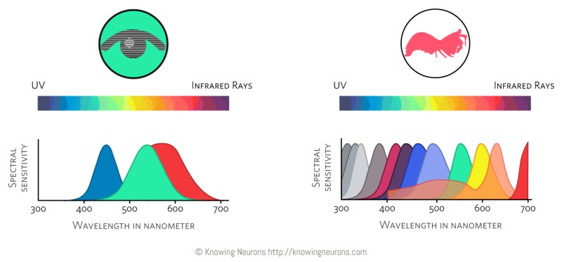
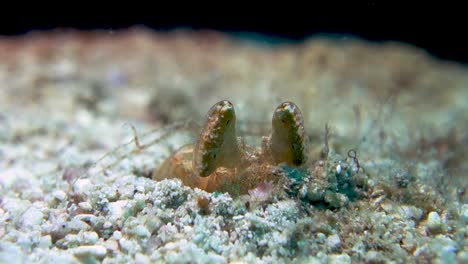

Fatos sobre o Stomatopoda
O Camarão Louva-a-deus: Um Fascinante Habitante do Mundo Stomatopoda
O Camarão Louva-a-deus, mais conhecido cientificamente como Odontodactylus scyllarus, é uma espécie de Stomatopoda, um grupo de crustáceos marinhos que inclui cerca de 400 espécies distintas. Esses notáveis habitantes do fundo do mar são conhecidos por suas habilidades de caça especializadas e uma visão incrivelmente apurada capaz de interpretar a polarização do espectro ultravioleta e infravermelho.
| Reino | Filo | Subfilo | Classe | Subclasse | Ordem |
| Animalia | Arthropoda | Crustacea | Malacostraca | Hoplocarida | Stomatopoda |
O tamanho
A Ordem Stomatopoda é um grupo fascinante de crustáceos marinhos que engloba cerca de 400 espécies. O Camarão Louva-a-deus, ou Odontodactylus Scyllarus, é um dos seus membros mais notáveis. As espécies desta ordem variam em tamanho, podendo ter de poucos milímetros até cerca de 40 cm nas espécies maiores.
Hábitos Alimentares e Comportamentais
Stomatopoda são exclusivamente carnívoros, caçando uma variedade de presas que inclui camarões, caranguejos, moluscos, peixes e até mesmo outros de sua própria ordem. Utilizam o segundo par de patas, altamente desenvolvido, para atacar a presa e para se defender. Em termos comportamentais, estes animais demonstram uma vasta gama de comportamentos sociais, desde ameaças visuais até rituais de côrte.
O Golpe Poderoso do Camarão Louva-a-deus
O Camarão Louva-a-deus é famoso por sua habilidade de desferir um dos golpes mais rápidos e poderosos do reino animal. Este golpe pode chegar à velocidade de uma bala calibre .22 (equivalente a 720 km/h) e a uma pressão de impacto de 600 N/cm². Este poder é tão surpreendente que é capaz de quebrar a carapaça de um caranguejo, as conchas duras e calcificadas de moluscos, ou até mesmo o vidro reforçado de um aquário.
A Visão Complexa dos Stomatopoda
Os Stomatopoda possuem o sistema de visão mais complexo do reino animal, com a habilidade de perceber até 12 cores primárias, correspondentes aos 12 pigmentos distintos presentes em sua retina. Isso permite que eles vejam um espectro de cores muito mais amplo do que qualquer outro animal conhecido - até 1 septilhão de cores.
Habitat e Distribuição
Estes animais são encontrados em quase todo o litoral brasileiro, mas são difíceis de observar devido aos seus hábitos furtivos. Eles vivem em fundos consolidados, lodosos ou arenosos, cavando seus próprios buracos ou aproveitando os orifícios deixados por outros animais para se instalar.
